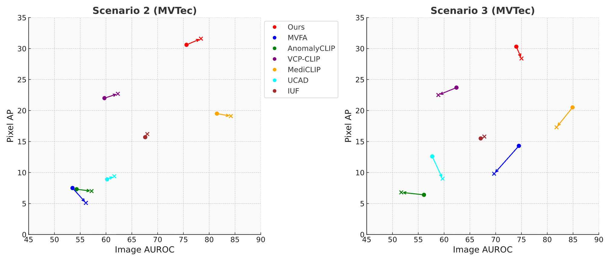
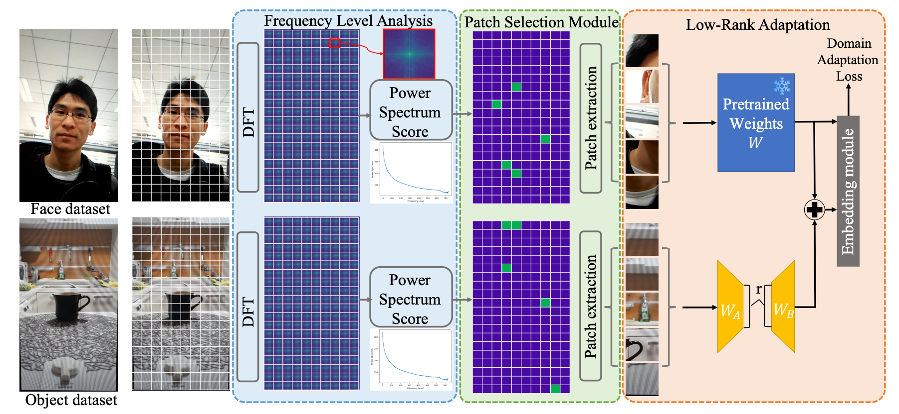
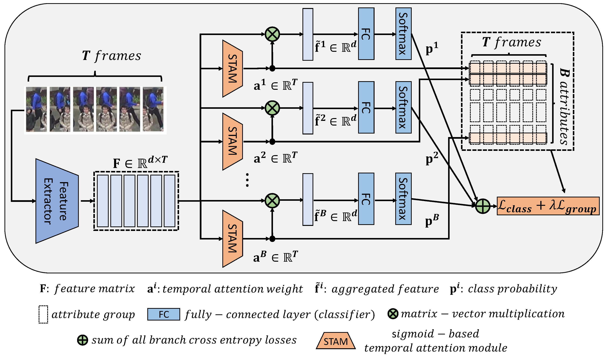
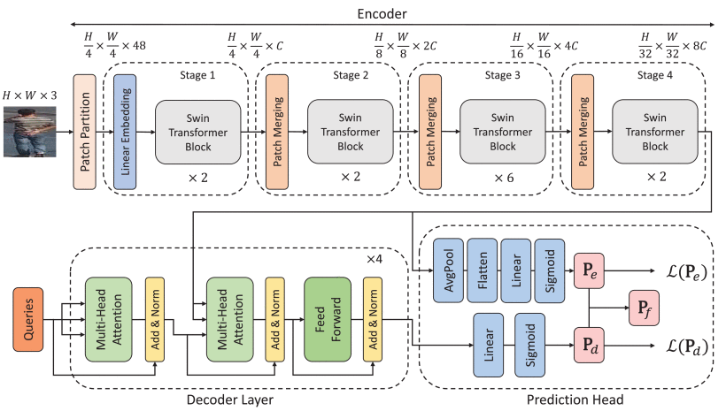
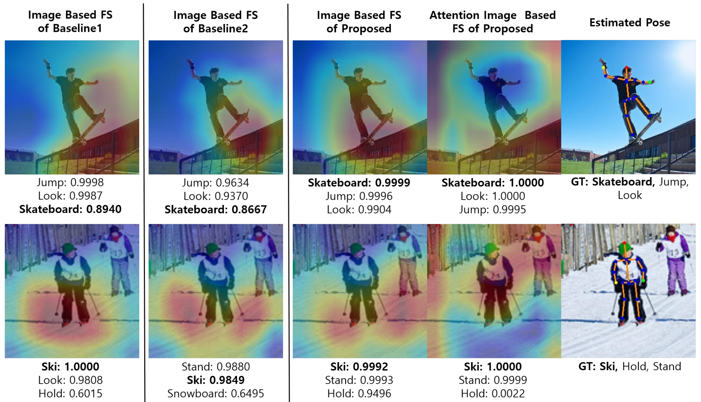

|
Geonu Lee I am an AI Research Engineer at SNUAILAB. I received my M.S. in Software Engineering from Gachon University in 2023, where I was advised by Prof. Jungchan Cho. Earlier, I completed my B.S. in Computer Engineering from Gachon University in 2021. Previously, I worked at ALCHERA, and I interned at Naver Cloud in 2023 and ETRI in 2020. |
{kind=link}
Publications(*: equal contribution, †: corresponding author) |
|  |
Continual-MEGA: A Large-scale Benchmark for Generalizable Continual Anomaly
Detection
Geonu Lee, Yujeong Oh, Geonhui Jang, Soyoung Lee, Jeonghyo Song, Sungmin Cha, YoungJoon Yoo† arXiv (Under review), 2025 [arXiv] |
|  |
Domain-Generalized Object Anti-Spoofing: Bridging Gaps and Patch Selection
for Robust Detection Across Domains
Geonu Lee*, Yonghyun Jeong*, Haneol Jang, Youngjoon Yoo† IEEE/CVF Winter Conference on Applications of Computer Vision (WACV), 2025 [Paper] |
|  |
Occluded Pedestrian-Attribute Recognition for Video Sensors Using Group
Sparsity
Geonu Lee, Kimin Yun, Jungchan Cho† Sensors, vol.22, no.17, pp.6626, Sep.2022. [Paper] |
|  |
STDP-Net: Improved Pedestrian Attribute Recognition Using Swin Transformer
and Semantic Self-Attention
Geonu Lee, Jungchan Cho† IEEE ACCESS, vol.10, no.1, pp. 82656 - 82667, Aug. 2022. [Paper] |

|
Improved Human-Object Interaction Detection Through On-the-Fly Stacked
Generalization
Geonu Lee, Kimin Yun, Jungchan Cho† IEEE ACCESS, vol. 9, no.1, pp. 34251-34263, Feb. 2021. [Paper] |
|  |
Body-Part-Aware and Multitask-Aware Single-Image-Based Action
Recognition
Bhishan Bhandari, Geonu Lee, Jungchan Cho† Applied Science, vol. 10, no. 4, pp. 1531-1548, Feb. 2020. [Paper] |
Experience |
| Jul. 2024 - Present |
SNUAILAB AI Research Engineer (Full-time) |
| Oct. 2023 - Apr. 2024 |
ALCHERA AI Research Engineer (Full-time) |
| Mar. 2023 - Sep. 2023 |
Naver Cloud AI Research Engineer (Intern) |
| Jan. 2020 - Feb. 2020 |
Electronics and Telecommunications Research Institute (ETRI) AI Research Engineer (Intern) |
Education |
| Mar. 2021 - Feb. 2023 |
Gachon University M.S. in Software Engineering |
| Mar. 2016 - Feb. 2021 |
Gachon University B.S. in Computer Engineering |
|
Template is from Jon Barron's awesome website. |